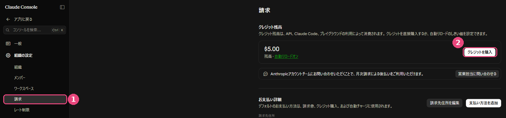
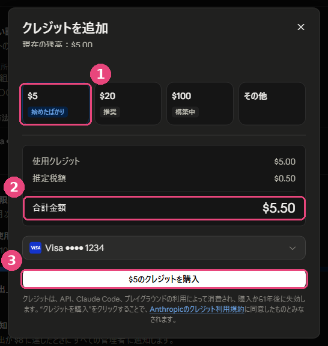
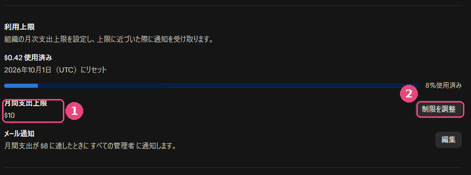
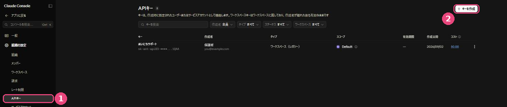
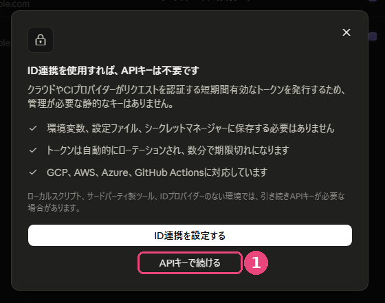
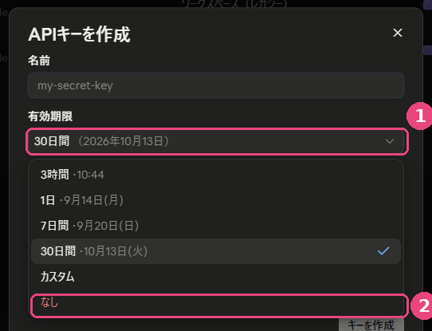
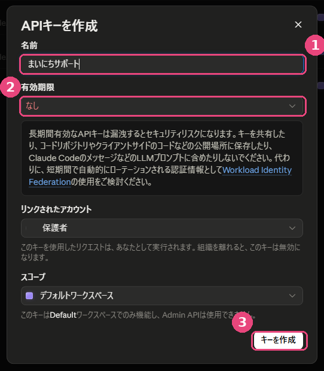

💬 AIチャット(チャチャ)の準備をする
「まいにちサポート」のそうだんチャットは、お子様の話し相手になるAIです。このAIを動かすために、ご家庭専用の「APIキー」 を1つご用意いただきます。だいたい10分ほどの作業です。クレジットカードをお手元にご用意ください。
※この手順と画面写真は、2026年9月に実際の画面で通して確認したものです。管理画面は黒い背景のデザインです。今後変わることがありますので、実際の画面と見比べながらお進めください。
なぜ、ご家庭ごとに用意するのか
お子様がAIと話した内容は、とてもプライベートなものです。もし開発者のアカウントを全家庭で共用していると、その会話が開発者側を経由することになってしまいます。ご家庭専用のキーをお使いいただくことで、お子様の会話は「ご家庭のアカウント」の中だけで完結し、開発者が内容を見ることはできなくなります。 少し手間はかかりますが、この一手間がお子様のプライバシーを守ります。
この作業で何をするか(全体像)
Claudeのコンソール(開発者向けの管理画面)にアカウントを作る クレジットを購入する(最低5ドルから) 使いすぎ防止の「上限」を設定する APIキーを発行して、控えておく
Step 1. アカウントを作る
platform.claude.com を開きます(以前の console.anthropic.com は、こちらに自動で切り替わります)。「Sign up」からアカウントを作成します。ふだんお使いのメールアドレスか、Googleアカウントでの登録ができます。
メールに届いた確認コードを入力すると、登録が完了します。
※これは、ふだんチャットで使う「Claude」のアカウントとは別の、開発者向けの管理画面 です。見慣れない画面ですが、使うのは最初の設定のときだけです。
Step 2. クレジットを購入する
このサービスは月額制ではなく、前払いのチャージ制 です。買ったぶんだけ使え、使い切るまで追加の請求は発生しません。
左のメニューから 1 「請求 」を開きます。
「クレジット残高」の欄にある 2 「クレジットを購入 」を押します。

はじめての場合、残高は $0.00 と表示されています。
「クレジットを追加」という画面が開きます。金額を選びます。1 いちばん少ない $5 で十分です ($20 に「推奨」と付いていますが、まずは $5 で様子を見てください)。
2 合計金額を確認します。消費税が上乗せされるので、$5 のクレジットなら支払いは $5.50 です。支払い方法を選び、3 「$5のクレジットを購入」を押します。残高に反映されれば完了です。

「使用クレジット $5.00 ＋ 推定税額 $0.50 ＝ 合計金額 $5.50」と表示されます。
まだカードを登録していない場合は、先に「請求」画面の「お支払い詳細」にある「請求先住所を編集」と「支払い方法を追加」 を済ませてください。住所の入力が終わっていないと、カードの欄が出てこないことがあります。
「自動リロード」という設定をオンにすると、残高が減ったときに自動でチャージされます。最初はオフのままをおすすめします。 まずは $5 でどのくらい使うかを見てから、必要に応じて検討してください。
消費税がかかります。 購入画面に「推定税額」として10%が上乗せされるため、$5 のクレジットを買うと支払いは $5.50 になります($20 なら $22.00)。残高に入るのは $5 ぶんです。
Step 3. 使いすぎ防止の上限を設定する(おすすめ)
「知らないうちに高額になっていたら怖い」という不安を、設定でなくしておきましょう。
同じ「請求」の画面を下にスクロールし、「利用上限 」という項目を探します。1 「月間支出上限」が、いま設定されている1か月の上限です。
2 「制限を調整」から、1か月に使ってよい上限額を設定します。その下の「メール通知」では、いくら使ったらメールで知らせるか を決められます。

今月いくら使ったかも、ここで一目で分かります。
前払い制なので、そもそもチャージした金額を超えて使われることはありません。上限設定は、その上でのもう一段の安心材料です。
Step 4. APIキーを発行する
左のメニューから 1 「APIキー 」を開き、右上の 2 「キーを作成 」を押します。

はじめての場合、一覧は空の状態です。
「ID連携を使用すれば、APIキーは不要です」という案内が出ます。これは会社のシステム向けの別のしくみの案内です。1 下側の「APIキーで続ける 」を押してください。

目立つ「ID連携を設定する」ではなく、その下の小さな文字のほうです。
作成画面が開きます。1 「名前」に分かりやすい名前を入れます(例:まいにちサポート)。
2 「有効期限」を「なし 」に変えます。ここを押すと選択肢が出るので、いちばん下の「なし」を選んでください。

初期値は「30日間」です。いちばん下の「なし」を選びます。
⚠️ ここがいちばんの落とし穴です。 30日間 」になっています。そのまま作ってしまうと、1か月後に突然そうだんチャットだけ返事が来なくなります 。必ず「なし」を選んでください。
「リンクされたアカウント」はご自身のままで構いません。「スコープ」は「デフォルトワークスペース 」を選びます。
3 「キーを作成 」を押します。

この形になっていれば大丈夫です。
作成すると、sk-ant-... で始まる長い文字列が表示されます。
⚠️ このキーは、この一度しか表示されません。
費用のこと
AIとの会話は、話した量に応じて少しずつ消費されます。ご家庭でお子様が日常的に使う範囲であれば、多くの場合ごく少額 におさまります。
項目 内容 支払いのしくみ 前払いのチャージ制。チャージした残高を超えて使われることはありません 最低購入額 $5 から(消費税10%が加わり、支払いは $5.50) 使った量の確認 コンソールの「請求」画面で、いつでも残高と履歴を確認できます 残高が尽きたら そうだんチャットが動かなくなります(他の機能はそのまま使えます)。追加でチャージすれば元に戻ります
セットアップを開発者に代行してもらう場合
発行したAPIキーは、次の手順(Cloudflare Workerの設定)で使います。この設定を開発者が代行する場合、キーを一時的に開発者がお預かりすることになります。
うまくいかないときは
Q. 「Sign up」の画面が英語で分かりません
ブラウザの翻訳機能(Chromeなら右クリック →「日本語に翻訳」)を使うと読みやすくなります。入力するのはメールアドレスとパスワードだけです。
Q. カードが登録できません
請求先住所の入力が済んでいないと、カード情報の欄が出てこないことがあります。先に住所を入力してみてください。それでも進めない場合は、別のカードをお試しください。
Q. キーをどこかに書き留めるのが不安です
キーは「AIに話しかける権利」そのものです。他人に知られると、その人があなたの残高を使ってAIを利用できてしまいます。写真に撮ってSNSに載せる、メールに書いて送る、といったことは避けてください。もし漏れたかもしれないと思ったら、そのキーを削除して作り直せば、古いキーは無効になります。
Q. そうだんチャットだけ返事が来ません
次の3つのどれかであることがほとんどです。APIキーの有効期限が切れた (作成時に「なし」以外を選ぶと、その期間で止まります。「APIキー」の一覧で「有効期限」の欄を見てください)ANTHROPIC_API_KEY を差し替えれば直ります。
設定ガイドの目次にもどる ／ プライバシーポリシー
↑